You have a webpage that includes the following markup:
An XML file named
You are developing a code-based solution to parse the contents of the XML file and display the information on the page. The solution must work on both modern and older browsers. You need to display the information from the XML file onto the page. How should you create the JavaScript code? (Develop the solution by selecting the required code segments in the correct order)
|
||
You are creating an application by using HTML5 and CSS3. The styles for the pages are derived from five style sheets. The styles are not being applied correctly to the pages in the application. You need to determine the order in which the style sheets will be applied by the browser. In which order will the five style sheets be applied?
|
||
| See "The Cascade" W3C Recomendation. | ||
You are validating user input by using JavaScript and regular expressions. A group of predefined regular expressions will validate two input fields: An email address in a function named validateEmail (for example, firstname@contoso.com) A nine-digit number that allows optional hyphens after the second and fifth character in a function named validateSSN(for example, 555555555 or 555-55-5555) You need to use the correct expression to validate the input. Which expression should you insert into each function?
|
||
You are developing a customer web form that includes the following HTML:
A customer must enter a valid age in the text box prior to submitting the form. You need to add validation to the control. Which code segment should you use inside the validation function?
You are developing an application that consumes a Windows Communication Foundation (WCF) service. The application interacts with the service by using the following code.
You need to authenticate to the WCF service. What should you do?
You are developing a form that captures a user�s email address by using HTML5 and jQuery. The form must capture the email address and return it as a query string parameter. The query string parameter must display the @ symbol that is used in the email address. You need to implement this functionality. How should you develop the form?

|
||
You are developing a web page that enables customers to upload documents to a web server. The page includes an HTML5 PROGRESS element named
|
||
An event handler must be attached to the request object to update the PROGRESS element on the page. You need to ensure that the status of the upload is displayed in the progress bar. Which line of code should you insert at line 04?
You are developing a customer web form that includes the following HTML:
Information from the web form is submitted to a web service. The web service returns the following JSON object:
You need to display the Confirmation number from the JSON response in the txtValue label field. Which JavaScript code segment should you use?
You are developing a web application that retrieves data from a web service. The data being retrieved is a custom binary datatype named
You need to develop the application to meet the requirements. What should you do?
|
||
You are developing a customer web form that includes the following HTML. A customer must enter a value in the text box prior to submitting the form. You need to add validation to the text box control. Which HTML should you use?
You are developing a web page for runners who register for a race. The page includes a slider control that allows users to enter their age. You have the following requirements: All runners must enter their age. Applications must not be accepted from runners less than 18 years of age or greater than 90 years. The slider control must be set to the average age (37) of all registered runners when the page is first displayed. You need to ensure that the slider control meets the requirements. What should you do?
|
||
You are developing an HTML5 web application that displays the current temperature whenever a button is clicked. The following code provides this functionality.
When the temperature is loaded, the status property on the loader instance does not change. You need to ensure that the status property on the loader instance is updated when the temperature is loaded. Which code segment should you use to replace the Loader function?
You are creating a class named Consultant that must inherit from the Employee class. The Consultant class must modify the inherited PayEmployee method. The Employee class is defined as follows. <code> function Employee() {} Employee.prototype.PayEmployee = function ( ){ alertt�Hi there!�); } </code> Future instances of Consultant must be created with the overridden method. You need to write the code to implement the Consultant class. Which code segments should you use? (Each correct answer presents part of the solution. Choose two.)
You are modifying an existing web page. The page is being optimized for accessibility. The current page contains the following HTML.
Standards-compliant screen readers must be able to identify the links contained within the navigation structure automatically. You need to create the navigation link structure in the page. With which container tags should you wrap the existing markup?
You are developing an airline reservation website by using HTML5 and JavaScript. A page on the site allows users to enter departure and destination airport information and search for tickets. You have the following requirements: Users must be able to save information in the application about their favorite destination airport. The airport information must be displayed in the destination text box whenever the user returns to the page. You need to develop the site to meet the requirements. Which lines of code should you use? (To answer, select the appropriate options from the drop-down lists in the answer area.)
You are developing an HTML5 web application for displaying encyclopedia entries. Each encyclopedia entry has an associated image that is referred to in the entry. You need to display the image by using the correct semantic markup. What should you do? (To answer, select the appropriate options from the drop-down list in the answer area.)
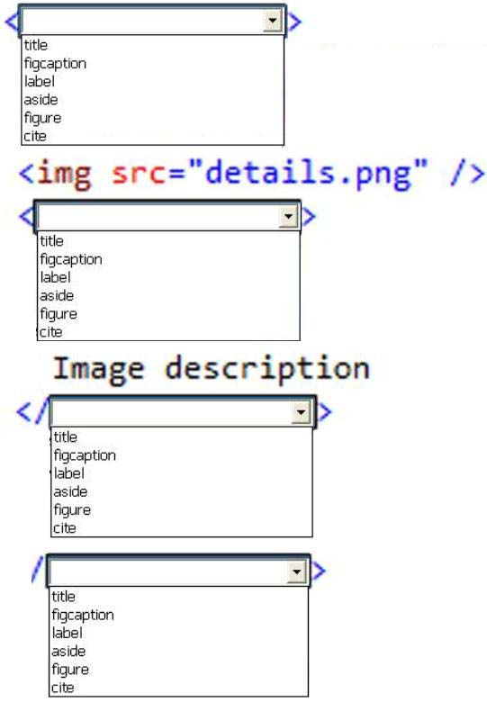
You are creating a JavaScript object that represents a customer. You need to extend the Customer object by adding the GetCommission() method. You need to ensure that all future instances of the Customer object implement the GetCommission() method. Which code segment should you use?
You are developing a web form that includes the following code.
When a user selects the check box, an input text box must be added to the page dynamically. You need to ensure that the text box is added. Which function should you use?
An HTML page has a canvas element. You need to draw a red rectangle on the canvas element dynamically. The rectangle should resemble the following graphic.
How should you build the code segment? (To answer, select the appropriate options from the dropdown lists in the answer area.)
You are developing an HTML5 page that has an element with an ID of logo. The page includes the following HTML. <code> <div> Logo:<br> <div id=�logo�> </div> </div> </code>
You need to move the logo element lower on the page by five pixels. Which lines of code should you use? (Each correct answer presents part of the solution. Choose two.)
You are developing a web page by using HTML5 and C5S3. The page includes a <div> tag with the ID set to validate. When the page is rendered, the contents of the <div> tag appear on a line separate from the content above and below it. The rendered page resembles the following graphic.
The page must be rendered so that the <div> tag is not forced to be separate from the other content. The following graphic shows the correctly rendered output.
You need to ensure that the page is rendered to meet the requirement. Which line of code should you use?
You are creating a web worker for an HTML5 application. The following tasks must be performed from within the web worker: Register an event listener for the web worker Start and stop the web worker You need to define a function that performs the required tasks. Which code segment should you use? (To answer, select the appropriate option from the drop-down list in the answer area.)
You are creating a JavaScript function that displays the name of a web application. You declare the following button element. <input type=�button� id= �About� value=�About� /> When a user clicks the button, a JavaScript function named About must be called. You need to create an event handler that calls the About function when the button is clicked. Which two code segments can you use? (Each correct answer presents a complete solution. Choose two.)
You are creating a function by using JavaScript. The function accepts an object as the parameter and returns a string that identifies the data type of the object. You have the following requirements: The function must return �Number� if the object is a number. The function must return �String� if the object is a string. The function must return �Unknown� if the object is neither a number nor a string. You need to implement the function to meet the requirements. How should you build the code segment? (To answer, select the appropriate options from the dropdown lists in the answer area.)
You need to test the value of the following variable in JavaScript. var length = �75�;
A block of code must execute if the length equals 75 regardless of the data type. You need to use the statement that meets this requirement. Which lines of code should you use? (Each correct answer presents a complete solution. Choose two.)
You are developing an application that uses a third-party JavaScript library named doWork(). The library occasionally throws an �object is null or undefined� error with an error code of -2146823281. The application must: Extract and handle the exceptions thrown by doWork() Continue normal program execution if other exceptions occur You need to implement the requirements. Which code segment should you use?
You are troubleshooting a web page that includes the following code. (Line numbers are included for reference only.)
What is displayed in the alert from line 11?
You are developing a web application that consumes services from a third-party application. A web worker processes the third-party application requests in the background. A page in the application instantiates the web worker process. You need to establish two-way communications between the web worker process and the page. Which two actions will achieve this goal? (Each correct answer presents a complete solution. Choose two.)
You are developing an HTML5 web application that displays customer mailing address information. The application loads addresses from a web service by using AJAX. The following code defines a Customer object and loads address data.
You need to implement the loadAddress function. Which code segment should you use?
You are developing an HTML5 web page. The appearance of the text box must change when a user moves the focus to another element on the page. You need to develop the page to respond to user action. Which line of code should you use?
You are developing an online shopping application that accepts credit cards for payment. If the credit card number is invalid, the application must: Generate an error Assign �200� to the error number Assign �Invalid� to the error description You need to write the code that meets the requirements. How should you write the code? (To answer, drag the appropriate code segment or segments to the correct location in the answer area. Each code segment may be used once, more than once, or not at all. You may need to drag the split bar between panes or scroll to view content.)
You are developing an HTML5 page that includes several paragraph elements. You have the following requirements: Add a drop shadow that is one inch below the text in the paragraph Set the radius of the drop shadow to five pixels You need to style the paragraphs to meet the requirements. Which CSS style should you use?
You are creating a web form that users will use to enter their personal information. The form includes the following HTML.
You have the following requirements: When a user enters an input box, the cell on the right must turn green. When a user leaves an input box, the cell on the right must turn white. You need to create the web form to meet these requirements. Which code segment should you use?
You are developing a web page. You create a grid layout by using the following CSS segment. You have the following requirements:
You must place content in the first column of the second row. The content must span two columns. You need to ensure that the style of the grid meets the requirements. Which CSS segment should you use?
You are creating an application by using HTML5 and CSS3. The styles for the pages are derived from five style sheets. The styles are not being applied correctly to the pages in the application. You need to apply the styles from highest priority to lowest priority. In which order should you use the five style sheets? (To answer, move the style sheet types from the list of style sheet types to the answer area and arrange them in the correct order.)
You are developing a web page by using HTML5. You have the following requirements: An H1 element must be placed at the top left corner of the page. The size and location of the H1 element must not change if additional elements are added to the page. You need to position the H1 element on the page. Which CS53 style should you use?
You are styling a box object on a page by using CSS3. You need to set the transparency of the object to 50%. Which two CSS3 styles will achieve the goal? (Each correct answer presents a complete solution. Choose two.)
You are developing a web page that will be accessed from various types of devices. You have the following requirements: The appropriate display resolution must be selected dynamically based on the device connecting to the page. Mobile devices with a maximum width of 480 pixels must be able to use the page. You need to ensure that the page displays correctly on any device. How should you build the code? (To answer, select the appropriate options from the drop-down lists in the answer area.)
You are developing an HTML5 web application and are styling text. You need to use the text-transform CSS property. Which values are valid for the text-transform property?
You are developing a website that has many web pages with hyperlinks to other sites. You need to ensure that if a hyperlink contains an image, the linked web page opens in a new window. Which jQuery code segment or segments should you use? (To answer, drag the appropriate line of code to the correct location. Each line of code may be used once, more than once, or not at all. You may need to drag the split bar between panes or scroll to view content.)
You are developing a page that includes text and an illustration. The web page resembles the following image.
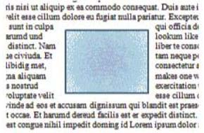
You have the following requirements: The illustration must be in the center of the page. The text must flow around the left, right, top, and bottom of the illustration. You need to ensure that the layout of the web page meets the requirements. Which line of code should you use?
You are developing a web page that has a group of HI and H2 elements. The page also includes a CSS class named underlineMe. You have the following requirements: The font color of all H1 and H2 elements must be changed to red. The CSS class underlineMe must be applied to all H1 and H2 elements. You need to update the web page to meet the requirements. Which code segment should you use?
You are developing an HTML5 application for a company. You apply the following style to a DIV element on a page.
You need to submit a draft illustration of the results of this code. Which illustration should you submit? (To answer, select the appropriate illustration in the answer area.)
You are developing a web page that will be accessed from various types of devices. You have the following requirements: The appropriate display resolution must be selected dynamically based on the device that is connecting to the page. Mobile devices with a maximum width of 480 pixels must be able to use the page. You need to ensure that the page displays correctly on any device. How should you build the code? (To answer, drag the appropriate media statement to the correct location. Each media statement may be used once, more than once, or not at all. You may need to drag the split bar between panes or scroll to view content.)
You are developing a web page by using HTML5 and CSS3. Hyperlinks on the page must be rendered with a style that reflects the last user action performed. You need to style the four anchor elements in the document. In what order should you specify the four anchor selectors? (To answer, move the appropriate anchor selectors from the list of CSS codes to the answer area and arrange them in the correct order.)
You are developing a web page that will be divided into three vertical sections. The main content of the site will be placed in the center section. The two outer sections will contain advertisements. You have the following requirements: The main content section must be set to two times the width of the advertising sections. The layout must be specified by using the CSS3 flexible box model. You need to ensure that the visual layout of the page meets the requirements. Which CSS3 property should you use?
You are developing an HTML5 page. The page includes the following code.
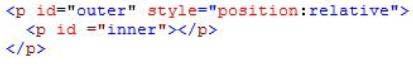
The inner paragraph must be exactly 15 pixels from the top left corner of the outer paragraph. You set the left style for the inner paragraph to the appropriate value. You need to set the position property of the inner paragraph. Which value should you use?
You are developing a customer web form that includes the following HTML input field.
<input id=�txtValue�/> If a customer enters a value in the input field, then it must be a numeric value. You need to add validation to the input field. Which HTML should you use?
You are developing a customer web form that includes the following HTML. <input id=�txtValue�/> You need to change the HTML markup so that customers can enter only a valid three-letter country code. Which HTML should you use?
You are developing a web form that includes the following HTML. <input id=�txtValue� type=�text� /> You need to ensure that a value is entered into txtValue before the form is submitted. Which code segment should you use?
You are developing a form that captures a user�s email address by using HTML5 and jQuery. The form must capture the email address and return it as a query string parameter. The query string parameter must display the @ symbol used in the email address. You need to implement this functionality. How should you develop the form? (To answer, select the appropriate options from the drop-down lists in the answer area.)
You are developing a web page that consumes a Windows Communication Foundation (WCF) service. The page includes the following code segment. var xhr = new XMLHttpRequest() ; The page uses the xhrHandler() method to listen for changes to the request status of the WCF service calls. It uses the xmlToJavaScript() method to convert the response from the WCF service to a JavaScript object. The xhrHandler() method must be called automatically each time the request status changes. You need to add the event handler to the request object.
Which line of code should you use?
You are developing a web application that retrieves data from a web service. The data being retrieved is a custom binary datatype named bint. The data can also be represented in XML. Two existing methods named parseXml() and parseBint() are defined on the page. The application must: Retrieve and parse data from the web service by using binary format if possible Retrieve and parse the data from the web service by using XML when binary format is not possible You need to develop the application to meet the requirements. What should you do? (To answer, drag the appropriate code segment to the correct location. Each code segment may be used once, more than once, or not at all. You may need to drag the split bar between panes or scroll to view content.)
You are developing a customer web form that includes following HTML. <input id=�txtValue�/> You need to develop the form so that customers can enter only a valid country code consisting of three English alphabet characters. Which code segment should you use?
You are developing an application that consumes an external web service that returns the latest stock rate. The application has two methods: +The getResults() method makes an AJAX web service request +The ShowRate() method displays the stock rate from the web service response You need to ensure that the ShowRate() method always displays the latest stock rate. Which code segment should you use?
You are developing an application that reads information from a file. The application must: +Execute a block of code if there is an error accessing the file +Execute a second block of code whether or not there is an error accessing the file You need to ensure that the error handling requirements are met. Which three statements should you implement in sequence? (To answer, move the appropriate statements from the list of actions to the answer area and arrange them in the correct order.)
You are developing an online shopping application that accepts credit cards for payment. If the credit card number is invalid, the application must: Generate an error Assign �200� to the error number Assign �Invalid� to the error description You need to write the code that meets the requirements. How should you write the code? (To answer, select the appropriate option from the drop-down list in the answer area.)
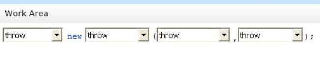
You are creating a JavaScript function to display the current version of a web application You declare a button as follows. <input type=�button� id=�About� value=�About� /> You need to create an event handler for the button by using an anonymous function. Which code segment should you use?
You are creating a function by using JavaScript. The function accepts an object as the parameter and returns a string that identifies the data type of the object. You have the following requirements: The function must return �Number� if the object is a number The function must return �String� if the object is a string The function must return �Unknown� if the object is neither a number nor a string You need to implement the function to meet the requirements. How should you build the code segment? (To answer, drag the appropriate word to the correct location in the code segment. Each word may be used once, more than once, or not at all. You may need to drag the split bar between panes or scroll to view content.)
You are testing the value of the following variable in JavaScript. var height = �300�; A block of code must execute if the following conditions are true: The height variable is set to 300 The height variable is of type string You need to implement the code to run the test. Which line of code should you use?
You are creating a web worker for an HTML5 application. The following tasks must be performed from within the web worker: Register an event listener for the web worker Start and stop the web worker You need to define a function that performs the required tasks. Which line of code should you use? (To answer, drag the appropriate line or lines of code to the correct location or locations. Each line of code may be used once, more than once, or not at all. You may need to drag the split bar between panes or scroll to view content.)
You are developing a web application that uses web workers to process images extracted from an HTML5 CANVAS object on a web page. You need to pass messages between the web workers and the web page. Which three types of objects should you use? (Each correct answer presents a complete solution. Choose three.)
You are developing an application for an online retailer. The company ships only to certain countries. The application must: Store a list of country codes in an array Validate the country code of the shipping address against the countries array Include a Boolean value in the array that indicates whether or not you can ship to the country Display a list of countries that can be shipped to if the user inputs a code for a country that the retailer cannot ship to You need to develop the application to meet the requirements. Which code segment or segments should you use? (To answer, drag the appropriate code segment or segments from the list of code segments to the correct location or locations in the work area. Each code segment may be used once, more than once, or not at all. You may need to drag the split bar between panes or scroll to view content.)
You are developing an airline reservation website by using HTML5 and JavaScript. A page on the site allows users to enter departure and destination airport information and to search for tickets. You have the following requirements: Users must be able to save information in the application about their favorite destination airport. The airport information must be displayed in the destination text box whenever the user returns to the page. You need to develop the site to meet the requirements. Which line or lines of code should you use? (To answer, drag the appropriate command or commands from the list of commands to the correct location or locations in the work area. Each line of code may be used once, more than once, or not at all. You may need to drag the split bar between panes or scroll to view content.)
You are creating a class named Sedan that must inherit from the Car class. The Sedan class must modify the inherited fourDoor () method. The Car class is defined as follows.
Future instances of Sedan must be created with the overridden method. You need to write the code to implement the Sedan class. Which two code segments should you use? (Each correct answer presents part of the solution. Choose two.)
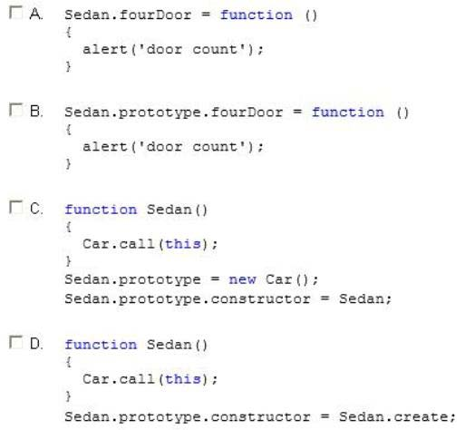
You are modifying a blog site to improve search engine readability. You need to group relevant page content together to maximize search engine readability.
Which tag should you use?
You are developing application web form by using HTML5 and JavaScript. You need to prevent users from submitting form data more than once. Which code segment should you use?
You are developing an HTML5 web application for a surveyor company that displays topographic images. The application must: Display the topographic images at different zoom levels without loss of detail Print the topographic images without loss of detail
Work from only one source file for each topographic image You need to ensure that the topographic images display according to the requirements. Which HTML5 element should you use?
An HTML page has a CANVAS element. You need to draw a red rectangle on the CANVAS element dynamically. The rectangle should resemble the following graphic.
How should you build the code segment? (To answer, drag the appropriate line of code to the correct location. Each line of code may be used once, more than once, or not at all. You may need to drag the split bar between panes or scroll to view content.)
You are modifying a website. The body of the page will be divided into two sections: A content section will contain blog posts and comments. An area on the right-hand side will contain advertisements. The page is defined by the following HTML.
The site must conform to HTML5 standards and must use HTML5 semantic tags. You need to ensure that the advertisements are on the rightmost section of the page. Which tag should you use?
You are developing an HTML5 page. You need to add author and copyright information. Which tag should you use?
You are developing an HTML5 web application and are styling text. You need to use the text-transform CSS property. Which value is valid for the text-transform property?
You are developing a web page for runners who register for a race. The page includes a slider control that allows users to enter their age. You have the following requirements: All runners must enter their age. Applications must not be accepted from runners less than 18 years of age or greater than 90 years. The slider control must be set to the average age (37) of all registered runners when the page is first displayed. You need to ensure that the slider control meets the requirements. What should you do? (To answer, drag the appropriate word or number to the correct location in the answer area. Each word or number may be used once, more than once, or not at all. You may need to drag the split bar between panes or scroll to view content.)
You are creating a JavaScript object that represents an employee. You need to extend the Employee object by adding the GetPayroll() method. You need to ensure that all future instances of the Employee object implement the GetPayroll() method. Which code segment should you use?
You are modifying a blog site to improve search engine readability. You need to group relevant page content together to maximize search engine readability. Which tag should you use?
You are developing an HTML5 page that has an element with an ID of picture. The page includes the following HTML.
You need to move the picture element lower on the page by five pixels. Which two lines of code should you use? (Each correct answer presents part of the solution. Choose two.)
You are modifying a blog site to improve search engine readability. You need to group relevant page content together to maximize search engine readability. Which tag should you use?
You are developing a customer web form that includes the following HTML. <input id=�txtValue�/> You need to change the HTML markup so that customers can enter only a valid three-letter country code. Which HTML should you use?
You are developing an HTML5 web application and are styling text. You need to use the texttransform CSS property. Which value is valid for the text-transform property?
You develop an HTML5 webpage. You have the following HTML markup: (Line numbers are for reference only.)
The webpage also contains the following CSS markup:
You need to determine how the webpage will appear when the CSS styles are applied. Select two.
You are reviewing the CSS markup for an HTML5 page that displays a news article. The CSS markup for the page is as follows:
The HTML markup for the page is as follows:
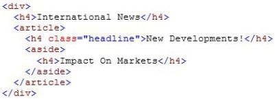
For each statement in the table, select Yes if the code segments above causes the page to behave as described. Select No if it does not. Make only one selection in each column.
You review code that uses WebSockets for a browser-based multiplayer game. Each player sends a move to the server, which then sends the move to all connected game instances. The following code runs in the browser and handles the sending and receiving of moves:
For each statement in the table, select Yes if the code segment above causes the page to behave as described. Select No if it does not. Make only one selection in each column.
You develop a webpage. The webpage must display a grid that contains one row and five columns. Columns one, three, and five are the same width. Columns two and four are the same width, but much wider than columns one, three, and five. The grid resembles the following image:
The grid must meet the following requirements: Each row must be tall enough to ensure that images are not cut off. Each row must contain five columns. The width of the columns must not change when the screen is resized or rotated. You need to define the style for the grid. Which CSS3 style should you use?
You implement an application by using HTML5 and JavaScript. You create a webpage that contains the following HTML:
The application must place a border on only the first UL element that is contained in the DIV element. You need to update the webpage. What should you do?
You troubleshoot a webpage that contains the following HTML element: <code> <canvas id= �clickCanvas� width-�300?> height= �300�>Your browser does not support the HTML5 canvas.</canvas> </code> The following JavaScript code is included in a script tag in the HEAD section of the webpage: (Line numbers are included for reference only.)
You need to invoke the clickReporter() JavaScript function when a user clicks the mouse on the canvas HTML element. What should you do?
You are implementing an application by using HTML5 and JavaScript. A web page contains the following HTML table.
The application must: Identify all rows in the table body that have a class attribute of selected Exclude the last selected row in the table You need to implement the web page according to the requirements. Which CSS selector should you use?
You create an application that sends information to a web service by using the following code: (Line numbers are included for reference only.)
When the web service returns a non-zero result code, you must raise an exception that contains the result code. You need to implement the code that generates the exception. Which line of code should you insert at line 04?
You are developing a customer web form that includes following HTML. <input id= �textAccountType�/> You need to develop the form so that customers can enter only a valid account type consisting of two English alphabet characters. Which code segment should you use?
You are developing an application that uses a JavaScript library. The library contains the following functions.
The application uses the following code. (Line numbers are included for reference only.)
The library may throw many types of exceptions. The exceptions are grouped by category. You need to catch and identify the exceptions by group. Which code segment should you insert at line 05?
You develop an HTML5 webpage. You have the following HTML markup:
You also have the following JavaScript variable defined: var languages = []; You need to add statements to an existing JavaScript function to sort the list items. Which four actions should you perform in sequence? (Develop the solution by selecting the required code segments and arranging them in the correct order.)
You create an HTML5 webpage. You have the following HTML markup:
You also have the following JavaScript code segment: <code> var jsonFruit = { �apples� : �12�, �bananas� : �8�, �watermelon� : �3� } </code> You need to add additional rows to the fruitTable element by processing the jsonFruit values in the order listed. Which three actions should you perform in sequence? (Develop the solution by selecting the required code segments and arranging them in the correct order.)
You have the following code:
The web service returns a JSON object that contains two properties named Description and FileName. The PersonImage object must meet the following requirements: Create an object that represents an image that will be displayed. Set the image properties from the values that are returned by the web service. Expose the image as a property of the PersonImage object. You need to insert code at line 13 to complete the implementation of the PersonImage object. Which three actions should you perform in sequence to complete the implementation? (Develop the solution by selecting the required code segments and arranging them in the correct order.)
You develop an HTML messaging application that allows users to send messages. The messages can have an optional file attachment that is identified by a filename. You use the following function to send a message:
You need to send a message with a file attachment. How should you complete the relevant code? (To answer, select the appropriate option from each drop-down list in the answer area.)

You develop an HTML application that calls a web service to retrieve JSON data. The web service contains one method named GetFullName that returns an Object named data. The data object contains two properties named GivenName and Surname. You need to load data from the web service to the webpage. How should you complete the relevant code? (To answer, drag the appropriate code segment or code segments to the correct location or locations in the answer area. Use only code segments that apply.)
A company asks you to create a function that displays loan amounts to their customers. You must create the function by using JavaScript to meet the following requirements: Display three different loan amounts to each customer. Display loan amounts in order starting with the greatest amount and ending with the least amount. You need to implement the function. How should you complete the relevant code? (To answer, drag the appropriate command or commands to the correct location or locations in the answer area. Use only commands that apply.)
You develop an HTML5 application that allows images to be dragged and dropped within a webpage. The webpage contains a DIV element and four IMG elements as defined in the code segment below:
You need to enable drag and drop for the application. How should you complete the relevant code? (To answer, select the appropriate option from each drop-down list in the answer area.)

You are creating a function named getText(). The function must retrieve information from text files that are stored on a web server. You need to develop the function to meet the requirement. Which code segment or segments should you use? (To answer, drag the appropriate command from the list of commands to the correct location or locations in the work area. Each code segment may be used once, more than once, or not at all. You may need to drag the split bar between panes or scroll to view content.)
You are developing an application for a retail store. The application will be used on mobile devices to provide real-time directions to the store. You have the following requirements: The application must find out a user�s location. As the user moves, the application must update the screen with the new location. As the user moves, the application must display the user�s speed. You need to develop the application to meet the requirements. Which code segment or segments should you use? (To answer, drag the appropriate code segment or segments to the correct location in the work area. Each code segment may be used once, more than once, or not at all. You may need to drag the split bar between panes or scroll to view content.)
You develop a webpage. You create the following HTML markup:

The layout of the webpage must contain three rows. The first row spans the entire width of the page and is labeled #Top. The second row contains three columns. The first column is labeled #Left; the second column is labeled #Main; and the right column is labeled #Right. The #Left and #Right columns are a fixed width. The #Main column occupies the remaining available space. The third and final row spans the entire width of the page and is labeled #Bottom. The layout of the webpage must resemble the following image:
You need to create the CSS styles to implement the layout. How should you complete the relevant styles? (To answer, select the appropriate option from each drop-down list in the answer area.)

You develop an HTML application that calls a Simple Object Access Protocol (SOAP) web service to retrieve data. You need to load data from the web service. What should you do? (To answer, drag the appropriate code segment or code segments to the correct location or locations in the answer area. Use only code segments that apply.)
You are creating a custom style by using CSS3. You have the following requirements to complete the style:
If the text in a line must wrap to another line, the last word must be able to break across lines. All text must be black and have a blue shadow, such that the text appears to glow blue. The text must look like the following: You need to complete the CSS3 style. How should you complete the relevant code? (To answer, select the appropriate option from each drop-down list in the answer area.)

You are developing a web page. The webpage must display a container. The container must display three colored rectangles near the top of the container. The colored rectangles are, in order, green, red, and yellow. The rectangles are aligned horizontally and evenly spaced across the width of the container. The layout of the page must resemble the following image:
You need to ensure that the page renders properly. How should you complete the relevant styles? (To answer, select the appropriate option from each drop-down list in the answer area.)

You review a web form that contains the following markup and code:
You need to ascertain how the webpage responds when it loads and how it reacts to user actions. For each statement in the table, select Yes if the code segment above causes the page to behave as described. Select No if it does not. Make only one selection in each column.
You create the following JavaScript code:
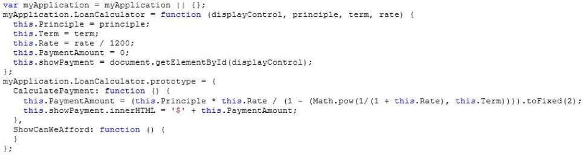
You must complete the ShowCanWeAfford() function: Display the message Denied! If the PaymentAmount variable is greater than 500. Display the message Approved! If the PaymentAmount variable is less than 300. Display the message Approved with caution! If the PaymentAmount variable is less than 500 and greater than 300. You need to add statements to the ShowCanWeAfford() JavaScript function to meet the requirements. Which three actions should you perform in sequence? (Develop the solution by selecting the required code segments and arranging them in the correct order.)
You test a webpage that contains the following JavaScript code:
The webpage also contains the following markup:
You need to ascertain how the webpage responds when the user enters characters and then clicks the add and divide buttons. For each statement in the table, select Yes if the action causes the webpage to behave as described. Select No if it does not. Make only one selection in each column.
An HTML page contains no embedded JavaScript or CSS code. The body of the page contains only the following line of code. <p id=�test�>test</p> A CSS style sheet must be applied dynamically. The style must visibly change the appearance of the paragraph on the page. You need to apply a style the paragraph. Which line of code should you use?
You develop an HTML5 web application. The web application contains a form that allows users to enter only their month of birth. The value that the users enter must be numbers between 1 and 12, inclusive. You need to implement the form element for the month of birth. Which element should you use?
You are developing an HTML5 web application for an architectural company that displays architectural blueprints. The application must: Display the blueprints at different zoom levels without loss of detail Print the blueprints without loss of detail Work from only one source file per blueprint You need to ensure that blueprints display according to the requirements. Which HTML5 element should you use?
You develop an HTML5 application that allows users to upload files from their local computers. The user interface must remain responsive during the upload. You need to implement the file upload functionality for the application. Which two actions should you perform? (Each correct answer presents a complete solution. Choose two.)
You are developing a web application that can function when users are not connected to the Internet. You need to check the Internet connectivity status of a user�s browser. Which method should you use?
You are creating a page that contains detailed employee information for a company portal. The page uses a jQuery library. The page contains a hidden button named btnEdit that is defined by the following code. <button id=�btnEdit� style=�display: none;n>Edit</button> The button is not displayed by default. The button must be displayed only if the user is logged on. You need to add code to the document.ready() function to meet the requirements for the button. Which line of code should you use?
You troubleshoot a webpage that includes the following code segment:
You need to evaluate the value of the variable named customer.name. For each statement in the table, select Yes if the code segment above causes the variable to evaluate as described. Select No if it does not. Make only one selection in each column.
You develop an HTML5 webpage that contains the following markup and code:
You have the following requirements: Display a message if users select the first OPTION element, and then submit the form. Do not display an alert message if users select any other OPTION element, and then submit the form. You need to implement the madeSelection() function. How should you complete the relevant code? (To answer, select the appropriate code segment from each drop-down list in the answer area.)
You develop a webpage that consumes a web service. The web service provides currency exchange rates. Visitors enter the currency type on the webpage and press the Submit button. The web service returns the current exchange rate. You need to ensure that the webpage always displays the most current information. How should you complete the relevant code? (To answer, select the appropriate option from each drop-down list in the answer area.)
You develop a webpage. The layout of the webpage must resemble the following image:
You need to ensure that the page renders properly. How should you complete the relevant CSS styles? (To answer, select the appropriate option from each drop-down list in the answer area.)
A company has an XML file named products.xml on a web server. The file contains a list of the products that the company sells. You need to display the contents of the products.xml file in a DIV element named Output. How should you complete the relevant code? (To answer, select the appropriate option from each drop-down list in the answer area.)
You are developing an application that analyzes population data for major cities in the United States. The application retrieves population statistics for a city by using a web service. You need to request data from the web service by using jQuery. Which code segment should you use?
You are developing a blog web page that is being optimized for accessibility. The page includes the following HTML.
The heading tags represent a blog post title, a blog post subtitle, and the author�s name. You need to ensure that the three headings are treated as a unit but retain their individual formatting. Which tags should you use to wrap the H1, H2, and H3 elements?
You develop a web application by using jQuery. You develop the following jQuery code: (Line numbers are included for reference only.)

The web application exposes a RESTful web API that has an endpoint of/product/create. You need to create a new product by using AJAX. Which code segment should you insert at line 05?
You develop a webpage that allows a user to download a 3PEG image and convert it to a PNG file. You need to implement the code to download the contents of the JPEG image with no additional decoding. Which JavaScript function should you use?
You are developing a shared library to format information. The library contains a method named _private. The _private method must never be called directly from outside of the shared library. You need to implement an API for the shared library. How should you complete the relevant code? (Develop the solution by selecting the required code segments and arranging them in the correct order. You may not need all of the code segments.)
You develop an HTML application that contains a table that displays a list of products. The table is defined with the following HTML markup:
You must style the table to look like the following image:
You need to implement the CSS selectors to select the rows that must have a blue background. Which CSS selector should you use?
You develop a webpage by using HTML5. You create the following markup: <input type �url� name= �website� required=�required� /> You need to ensure that the value that the user enters contains a secure URL. What should you do?
You develop a webpage by using HTML5. You create the following markup and code: (Line numbers are included for reference only.)
You need to ensure that the values that users enter are only numbers, letters, and underscores, regardless of the order. Which code segment should you insert at line 04?
You develop an interactive scalable vector graphics (SVG) application. You write the following HTML markup that makes a rectangle rotate:
You need to control the speed of the rotating rectangle. How should you complete the relevant code? (To answer, select the appropriate option from each drop-down list in the answer area.)
You create a webpage that includes the following HTML markup: (Line numbers are included for reference only.)
You need to ensure that a form cannot be submitted unless the INPUT element contains the word OK. Which five actions should you perform in sequence? (To answer, move the appropriate actions from the list of actions to the answer area and arrange them in the correct order.)
You are implementing a web worker by using JavaScript and HTML5. The web worker processes a long-running loop and returns the result to a webpage. The web worker is defined on the webpage as follows:

You have the following requirements: Evaluate the message value in the web worker.
Process the loop based on the iterations value that is passed from the webpage. Return a value back to the webpage from the web worker. You need to implement the web worker. How should you complete the relevant code? (To answer, drag the appropriate code segment to the correct location or locations in the answer area. Use only code segments that apply.)
HOTSPOT
How does the page render? For each statement in the table, select Yes if the behavior is described. Select No if it is not. Make only one selection in each column.

You are creating an HTML5 application that allows users to play video on a page by using the VIDEO element. You need to enable the user to start, stop, and pause the video. Which line of code should you add to the page?
You are creating a web page that contains a canvas with text. The page contains the following JavaScript code. (Line numbers are included for reference only.)
The text on the canvas must rotate 90 degrees when a user clicks a button on the page. You need to ensure that the text rotates when the user clicks the button. Which line of code should you add at line 03?
You develop an HTML5 webpage that contains the following HTML markup:
You have the following requirements: Retrieve the content for any OPTION elements when the value of the selected attribute equals selected. Add the content to a comma separated string. You need to retrieve the required data. Which two code segments should you add to the webpage? (Each correct answer presents a complete solution. Choose two.)
You are creating a function by using JavaScript. You have the following requirements: The function must display loan amounts to the user within the following HTML element: <div id=�display�></div> The loan amount of 2100 must display in the HTML element. All declared variables and functions must be scoped to the myApp variable. You need to implement the function. How should you complete the relevant code? (To answer, drag the appropriate code segments to the correct location or locations in the answer area. Use only code segments that apply.)
You create a custom style by using CSS3. A box with rounded corners must appear around text. The box must match the following illustration:

You need to add the CSS3 markup to your style. How should you complete the relevant CSS styles? (To answer, select the appropriate option from each drop-down list in the answer area.)

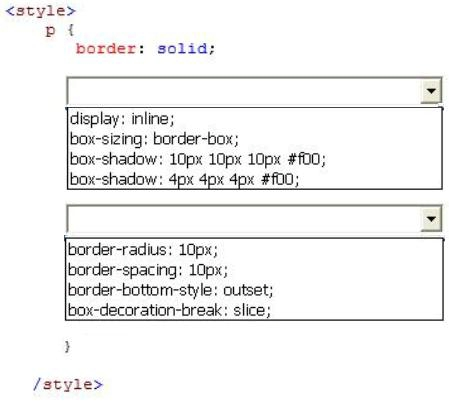
You implement a callback function by using JavaScript. You need to process the returned XML data. How should you complete the relevant code? (To answer, select the appropriate option from each drop-down list in the answer area.)

You develop an HTML5 application. You give users a numeric access code that can be used only one time. Users must enter the numeric access code in the login form of the application. The numeric characters must be hidden by a masking character. You need to implement the form element for users to enter the code. Which HTML element should you use?
You are developing an HTML5 web application that displays stock information. The application loads information from a web service by using AJAX. The following code defines a Stock object and loads stock data.
You need to implement the loadStock function. Which code segment should you use?
You review a webpage that contains the following markup:
How does the page render? For each statement in the table, select Yes if the behavior is described. Select No if it is not. Make only one selection in each column.
You create an HTML5 application that includes JavaScript. The application performs several AJAX requests. One AJAX request retrieves order information from a web service and then sends the information back to a webpage within the application. You must create a custom event. You have the following requirements: The webpage must contain an HTML element named ordersListing that will receive the custom event notification. The event name must be ordersReceived. The event must pass a custom value named orderCount. The event must run a JavaScript method named showOrdersReceivedCount after the orders Listing HTML element receives the event. Do not allow other DOM elements to receive the event. Allow the event to be cancelled. Send the event into the event system. You need to implement the custom event to notify specific DOM elements of the AJAX response. Which three actions should you perform in sequence? (Develop the solution by selecting the required code segments and arranging them in the correct order.)
You are developing an application by using JavaScript. You must write a function that returns the sum of the variables named v1, v2, v3, v4. You need to complete the sum function. How should you complete the relevant code? (To answer, drag the appropriate code segment or segments to the correct location or locations in the answer area. Use only code segments that apply.)
You are developing a web page that includes the following HTML. <span id = �myTextSpan� class = �redText�> Hello There! </span> The font color of text inside the span must be red. You need to develop the web page to meet the requirement. Which two CSS segments will achieve the goal? (Each correct answer presents a complete solution. Choose two.)
You are troubleshooting an application. Users report that the UI is slow to respond. You need to improve UI responsiveness by moving application tasks to web workers. Which two tasks can you move to achieve this goal? (Each correct answer presents a complete solution. Choose two.)
You develop an interactive scalable vector graphic (SVG) application. You write the following code (Line numbers are included for reference only.):
You need to increase the size of the circle by 50 percent. Which code segment should you insert at line 02?
You develop an HTML5 webpage. You have the following HTML markup:
You need to change the background color for all of the elements whose name attribute ends with the word name.
Which code segment should you add to the webpage?
You develop an HTML application that is located at www.adventure-works.com. The application must load JSON data from www.fabrikam.com. You need to choose an approach for loading the data. What should you do?
You are building a web page for a newspaper publisher. You have the following requirements: The web page should split the content into columns that are at least 100 pixels wide. The number of columns displayed must be set by the browser. You need to implement the correct CSS properties. Which line of code should you use?
You develop a webpage with a standard input control by using HTML5. The input control must display the text Enter your given name, as shown below:
When a user selects the input control, the text must disappear. You need to create the input control. Which input control should you use?
You develop an HTML5 webpage. You have the following HTML markup:
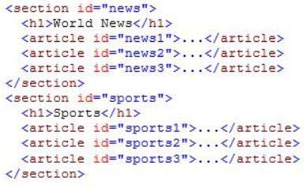
You need to add a background color to the first article in each section. Which code segment should you add to the webpage?
You are creating a custom object as described by the following code.
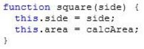
You need to implement the calcArea method. Which code should you use?
You are developing a web page that includes the following HTML.

You need to ensure that the email element is enabled only if the user selects the IT Support check box. Which CSS selectors should you use? (To answer, drag the appropriate selector to the correct location. Each selector may be used once, more than once, or not at all. You may need to drag the split bar between panes or scroll to view content.)
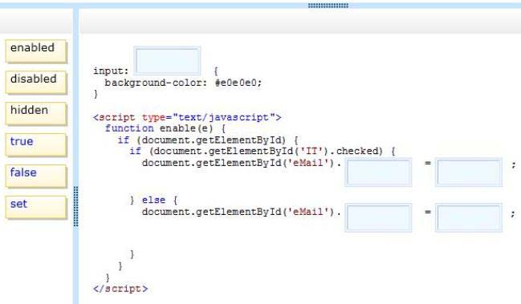
You are developing an HTML5 web form to collect feedback information from site visitors. The web form must display an INPUT element that meets the following requirements: Allow numeric values between 1 and 10. Default to the value of 5. Display as a slider control on the page. You need to add the INPUT element to the form. Which HTML element should you add?
You develop an HTML5 application. The application uses an image that is returned from an HTTP POST request. You develop the following code: (Line numbers are included for reference only.)
You need to display the loaded image in the application. Which code segment should you insert at line 04?
You develop an HTML5 webpage that contains the following HTML markup: <input id=�loanTermTextBox� type=�text� /> Users must enter a valid integer value into the text box.
You need to validate the data type that is received from the input element. Which two code segments should you include on the webpage? (Each correct answer presents a complete solution. Choose two.)
You develop an HTML5 application for a company. Employees must enter a personal identification number (PIN) in an INPUT element named SecurityCode to access their employee records. The SecurityCode element must meet the following requirements: Allow up to 6 digits. Do not display numbers as they are entered. Display the text Enter PIN Code before the user enters any data. You need to implement the SecurityCode element. Which HTML markup should you add to the application?
You develop an HTML5 webpage. You have the following HTML markup:
You need to update the content of the DIV element when the mouse hovers over an image and when the mouse coordinates change. How should you complete the relevant code? (To answer, drag the appropriate code segment to the correct location or locations in the answer area. Use only code segments that apply.)
You are creating a custom CSS3 style. You have the following requirements to complete the style: Box1 has a red outline. Box1 contains box2, and box2 must remain inside box1 Box2 must have a green to black gradient. Box2 must be surrounded by white space. The style resembles the following diagram:
You need to add the CSS3 code to the styles. How should you complete the relevant code? (To answer, select the appropriate code segment in each drop-down list in the answer area.)

You develop an application to host user-generated HTML and JavaScript content. A common error handler in your application must process all unhandled errors. You need to implement global error handling for the application. Which code segment should you use?
You are creating a custom function. You pass an object named testObj to the function as a parameter. You do not use inheritance through the functions. The function must establish whether testObj inherits from another object named parentObj. You need to ensure that the function performs as required. Which method or operator should you add to the function?
You develop an HTML5 webpage. You have the following HTML markup:
You need to call the click event for the addOneltem button a determined number of times when the user clicks the addBoxOfltems button. Which code segment should you add to the webpage?
You are validating user input by using built-in JavaScript functions. The application must: Store the value that is entered in a variable named inputValue Use the built-in isNaN(tnputValue) function to evaluate the data type You need to validate the return value of the isNaN(inputValue) function. Which values will be returned? (To answer, configure the appropriate options in the dialog box in the answer area.)
You develop an HTML application that is located at www.adventure-works.com. The application must load JSON data from www.fabrikam.com. You need to choose an approach for loading the data. What should you do?
You are creating a blog site by using HTML5 and JavaScript. An inline frame enables users to post comments. It is possible for users to inject malicious scripts into their comments. You need to minimize the ability for malicious scripts to execute on the site. Which line of code should you use?
You develop an HTML5 application that interacts with a REST service. The REST service accepts JSON data. A JavaScript object named form Data contains data that is sent to the REST service. You need to convert the JavaScript object named formData into JSON. Which code segment should you use?
You are developing an HTML page that includes the following code. <h1 id=�header�>A Static Page</hl> You need to modify the content of the HI element dynamically by using JavaScript. Which code segment should you use?
You are developing an HTML5 web application that will display encyclopedia entries. Each encyclopedia entry has an associated image that is referred to in the entry. You need to display the image by using the correct semantic markup. What should you do? (To answer, drag the appropriate HTML tag to the correct element. Each tag may be used once, more than once, or not at all. You may need to drag the split bar between panes or scroll to view content.)
You are developing a web page that will contain an animated logo. The web page currently has a logo image on a canvas object. You need to spin the logo image on the canvas. Which method should you use?
You are developing a web page that includes the following HTML. <span id=�myTextSpan� class=�myStyle�>Hello, World!</Span> You need to use inline CSS styling to format the text with Arial font. Which code segment should you use?
You create the following JavaScript code:
You have the following requirements: You must invoke a function that displays the vehicle information within the following HTML element: <div id=�display�x/div> The output of the function must appear on the webpage as follows: Vehicle Color is silver Stay safe! Vehicle TransmissionType is manual Big machine! You need to invoke the JavaScript function to display the required output in the HTML element. Which two code segments should you use? (Each correct answer presents a complete solution. Choose two.)
You develop an HTML5 webpage. You have the following JavaScript code:
You need to handle the click event when a user clicks the show/Dialog button. Which code segment should you insert at line 02?
You are developing an application that processes order information. Thousands of orders are processed daily. The application includes the following code segment. (Line numbers are included for reference only.)
The application must: Display the number of orders processed and the number of orders remaining Update the display for every 25th record processed You need to develop the application to meet these requirements. Which line of code should you insert at line 04?
You develop an HTML5 webpage. You have the following HTML markup: <input type=�text� id=�username� /> You need to prevent users from entering specific characters into the username field. What should you do?
You troubleshoot a webpage that contains the following HTML markup: (Line numbers are included for reference only.)
The webpage also contains the following JavaScript function named someEvent() that is declared in the HEAD section of the HTML: <code> Function someEvent() { Alert(�someEvent fired!�); } </code> The JavaScript function named someEvent() must run only when the user clicks the DIV element, not the INPUT elements. You need to modify the webpage to invoke the JavaScript function named someEvent(). What should you do? (Each correct answer presents a complete solution. Choose two.)
You develop a webpage by using HTML5. The user interface of the webpage must show a gray-lined box that contains the label Enter your information:. Inside the box are two labels and two input boxes. The first input box must be labeled Name:. The second input box must be labeled Email:. Below the box is a Submit button. The user interface must look like the following;
You need to create the user interface. Which markup should you use?
You are developing an application to track project management for your company. The status of the project is stored in a variable named percentComplete. The method must execute only when percentComplete is equal to the numeric value 100. You need to develop the application to meet the requirement. Which code segment should you use?
You develop a website for a company by using HTML5. You have the following requirements: Allow multiple news postings per page under the title �Welcome to the Semantic Web!�. Search engines must be able to index individual news postings. News postings must be styled by using the following CSS markup: .posting { line-height: 150%; ) You need to structure the markup for each individual news posting. How should you complete the relevant markup? (To answer, drag the appropriate markup to the correct location or locations in the answer area. Use only markup that applies.)

You have a webpage that includes the following markup and code:
You need to troubleshoot the code by clicking the Submit button. Which value will be displayed?
You develop an HTML5 webpage with custom CSS. You have the following HTML markup: <div class=�new� Item�>�</div> You have the following requirements: In addition to your CSS, you must use a corporate branded stylesheet named corporate.ess. The corporate.ess file contains the style rule that must be used for .newsItem. You must use the corporate.ess file to ensure that the webpage changes when the brand changes. You must add additional style rules to the webpage. You cannot modify the corporate.ess file. You need to apply the appropriate CSS rules to meet the requirements. What should you do?
You are developing an e-commerce website. Users place products into a shopping cart. You need to ensure that the shopping cart data is available between browser sessions. Which object should you use to store the shopping cart data?
You are creating a JavaScript object that represents a customer. You need to extend the Customer object by adding the GetCommission method. You need to ensure that all future instances of the Customer object implement the GetCommission method. Which code segment should you use?
You develop an HTML5 webpage. You have the following HTML markup:
You need to change the background color for all of the elements whose name attribute ends with the word name. Which code segment should you add to the webpage?
You are developing a web application by using HTML5. You have the following requirements. The color of a menu item must change when a user hovers over the item. The color of the menu item must change back to its original color after five seconds. You need to ensure that the animation is applied to all menu items. Which CSS3 code should you use?
You are implementing an HTML page that uses a custom sans-serif font. The CSS statement for the page is as follows.
Some users report that text is displayed in the default font for the browser.
You need to modify the CSS statement to ensure that the content is displayed with the custom font. What should you do? (To answer, select the appropriate options from the drop-down lists in the answer area.)

Your company uses a third-party component that generates HTML for a website. The third-party component creates DIV elements that display a yellow background. The third-party component uses inline styles in the DIV elements that are inconsistent with your corporate standards. You must override the DIV elements in the style sheet with the corporate styles. You need to ensure that the website meets corporate standards. Which style should you use?
You are developing a form that captures a user�s email address by using HTML5 and jQuery. The form must capture the form elements as a string. You need to implement this functionality. How should you develop the form? (To answer, drag the appropriate code segment to the correct target or targets in the answer area. Each code segment may be used once, more than once, or not at all. You may need to drag the split bar between panes or scroll to view content.)
You develop an HTML5 webpage that contains the following HTML markup:
Users must receive a message after they click the Submit button if the text entered into the favoriteColor text box is fewer than 2 characters or greater than 10 characters. You need to implement the testLength() function. Which code segment should you use?
You are developing a website that helps users locate theaters in their area from a browser. You created a function named findTheaters (). The function must: Get the current latitude and longitude of the user�s device Pass the user�s location to findTheaters() The user needs to access the geolocation information from the browser before searching for theaters. Which code segment should you use?
You are developing an HTML5 web application. The application loads data from a web service by using AJAX. The application displays the data by calling the displayData function. The data is loaded by using the following code.
You need to ensure that the data is displayed when it is successfully retrieved from the web service. Which code segment should you use?
You are developing a web page that performs CPU-intensive calculations. A web worker processes these calculations on a separate background thread. The process is instantiated from the web page. You need to stop the web worker process after the calculations are completed. Which two actions can you perform to achieve this goal? (Each correct answer presents a complete solution. Choose two.)
You are developing an HTML5 page named main.html. The JavaScript code for the main page is located in a file named myApp.js. You need to create a web worker and instantiate it from main.html.
Where should you place the web worker code?
You are developing a JavaScript library. You have the following requirements: Custom exceptions must include an error message and custom error number. These exceptions must be thrown when data validation errors occur. Developers must call the library to easily catch the exception and identify the problem. You develop the following code. (Line numbers are included for reference only.)
You need to complete the code to meet the requirements. Which line of code should you insert at line 09?
You are developing an application that retrieves a stock rate from an external web service. A web page displays a simple rotating animation to indicate whether the stock rate is increased or decreased. The default image, as shown in the following graphic, indicates unchanged or neutral.
The arrow must point down if the stock rate is decreased, as shown in the following graphic.
You need to ensure that the arrow points down when the stock rate decreases. Which CSS style should you apply?

You are troubleshooting a web page that includes the following code segment.
You need to evaluate the value of the variable x. What will be displayed in the user interface?
You develop an HTML5 chat application. You need to provide real-time updates to the messages that users post in the chat application. What should you do?
You are creating a rotating image of a company logo. The logo must spin on a horizontal axis and on a vertical axis. You need to use the least amount of development effort to meet the requirement. What should you do?
You are developing an HTML5 web application that provides a discussion forum for users. When a user registers to access the application, the user enters an email address. Users can enter data that can result in cross-site scripting (XSS) attacks. You need to ensure that email input is as secure as possible. Which two techniques should you use? (Each correct answer presents a complete solution. Choose two.)